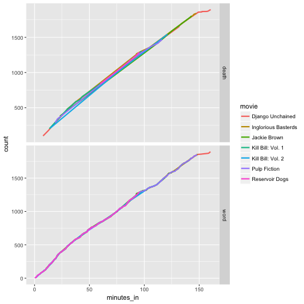

The data analysis strategy of Split-Apply-Combine creates a concise description of the basic operations that occur at the start of most analyses. The split-apply-combine procedure is to split your data into pieces, apply a function to each piece, and combine those pieces back together with the results.
There are several base R functions that support the split-apply-combine strategy. A few of the more commonly used functions include subset(), split(), with(), by(), apply(), sapply(), lapply(), tapply(), aggregate(), rbind(), and cbind(). These functions can be combined in different combinations to tackle any task plyr can complete, but the functions are more rigid in their abilities and the syntax is inconsistent. It is also possible to write custom functions using for() loops to do your analysis; however, this requires you to write a lot of code simply for bookkeeping purposes.
In my opinion, the key advantage of using plyr (and now dplyr in combination with the other tidyverse packages) is that after you overcome the learning curve, programming becomes more intuitive and concise. In addition, I think that it becomes easier to reproduce your code.
To find a dataset I went to FiveThirtyEight’s github repository that contains a collection of some of the datasets used in FiveThirtyEight’s articles. Hoping to avoid any dataset involving politics or current events for the evening, I chose to use the tarantino dataset, a complete catalog of every time someone cursed or bled out in a Quentin Tarantino movie. Using the split-apply-combine strategy with the dplyr package, I worked to recreate part of the analysis done by FiveThirtyEight.
After reading in the data, I first summarized the data by getting the total counts for curses and deaths in each movie and then created a new variable that is a curse to death ratio for each movie.
films <- read_csv( curl("https://raw.githubusercontent.com/fivethirtyeight/data/master/tarantino/tarantino.csv"))
films %>% count(movie, type) %>% group_by(movie) %>% summarize(curses=n[type=="word"], deaths=n[type=="death"], curse_ratio=curses/deaths) %>% arrange(desc(curse_ratio))## Error in count(., movie, type): object 'movie' not foundI then combined the split-apply-combine strategy with the dplyr and ggplot2 packages, to visualize how the number of curse words and deaths accumulate throughout the time span of each movie.
films %>% group_by(movie, type) %>% mutate(count =rank(minutes_in)) %>% ggplot(aes(x=minutes_in, y=count, color=movie)) + geom_line(size=1)+facet_grid(type~., scale="free")